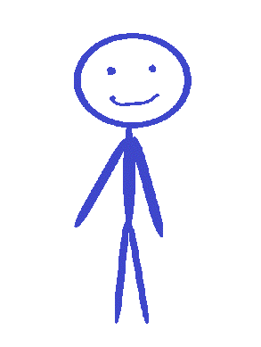

Sivustosta
Sivusto on luotu täyttämään opintoihin liittyvän verkkosuunnittelukurssin tavoitteet.
Kaikki sivustolla esiintyvä materiaali on sivuston tekijän aluperäistä materiaalia, vaikka ei kaunista sellaista.
Paintillä luotu materiaali lasketaan myös alkuperäiseksi, vaikka se ei taiteelta näytäkkään.
Materiaalia ei saa kopioida ilman asianmukaista lupaa ja koska yhteystietoja ei tältä sivulta löydy, niin luvan saaminen voi olla haastavaa.
Sivustolla esitetyt tiedot ja väitteet ovat siis täytteenä sivustolle, eivätkä siis ole täysin faktapohjaisia.
Tätä sivustoa ei tule käyttää lähteenä asiapohjaiselle materiaalille
Sivusto tuli suoritusta varten julkaista eeteriin, joten jos ekstyit tänne, enkä ole vielä ajanut sivustoa alas, niin nyt tiedät miksi tämä on olemassa.
Sivusto on vain proof of concept kurssisuoritusta varten. Sivusto ei tallenna mitään tietoja käyttäjästään.
Sivusto on myös osoitettu robotinvastaisella meta tägillä, joten jos löysit tiesi tänne hakupalvelun kautta, ei se silloin noudata asetettua pyyntö.
Tämä viittaisi hakupalvelun toimivan kyseenalaisilla tavoilla ja suosittelen vaihtamaan palvelua.
Sivuston tekijästä
Olen suorittamassa opintoihin liittyvää verkkosivujen suunnitteluun liittyvää kurssia.
Pidän sivua pystyssä ainakin tämän kurssin suorittamiseen asti, paitsi jos on tiedossa lisää vastaavaa.
En myöskään ole maailman luovin ihminen, joten aihe valittiin sarkastisesti toteamalla "Jos teen sen vaikka sinisen historiasta.".
Sarkasmi siis kuitenkin kääntyi ratkaisuksi ja tässä sitä ollaan.
Tässä maalaus meikäläisestä. Ihan itse piirsin.
